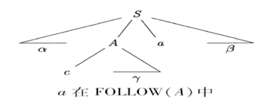

Parsing (Top-Down Parsing)👀
约 5896 个字 60 行代码 预计阅读时间 20 分钟
Abstract
- 本节主要介绍语法分析 (Parsing) 和上下文无关文法 (Context-Free Grammar, CFG) 的基本概念
- 和 自顶向下的语法分析方法
上下文无关文法 | Context-Free Grammar👀
Note
CFG 是一种形式文法，用于描述上下文无关语言 (Context-Free Language) 的语法结构.
CFG 简介👀
问题: 如何形式化定义编程语言的语法？
语法分析的目的是教会计算机判断输入合法性
例：简单计算器程序
{kind=link}
如何构造编程语言的语法分析器
- 用 CFG 定义一个编程语言的语法
- 基于 CFG 构建解析器:
- Top-Down Parsing | 自顶向下的语法分析
- Bottom-Up Parsing | 自底向上的语法分析
- More about parsing:
- Automatic paraser generation
- Error recovery
CFG 的定义👀
上下文无关文法: 描述语言的语法结构
- \(T\): 终结符集合 (Terminals), 组成串的基本符号 (Token)
- 例：\(T = \{\text{num}, +, -, (, )\}\)
- \(N\): 非终结符集合 (Non-terminals), 表示串的集合的语法变量 (在程序语言中通常对应于某个程序构造)
- 例：\(N = \{\text{expr}, \text{term}, \text{stmt}\}\)
- \(P\): 产生式集合 (Productions), \(A \rightarrow a\), \(A \in N\), \(a \in (T \cup N)^*\)
- 头(左)部 \(A\) 是一个非终结符，右部 \(a\) 是一个符号串
- 描述了一个将终结符和非终结符组合成串的方法
- e.g. \(E \rightarrow E + E\), \(E \rightarrow (E)\), \(E \rightarrow \text{id}\)
- \(S\): 开始符号 (Start symbol), \(S \in N\)
- 某个被指定的非终结符号
- 它对应的串的集合就是文法的语言
- \(T \cap N = \emptyset\)
- \(T \cup N\) : 文法符号集
EOF Marker
$: end of file (EOF)- To indicate that
$must come after a complete \(S\) -phrase- add a new start symbol \(S'\) and a new production \(S' \rightarrow S\$\)
产生式的缩写👀
对一组有相同左部的 \(\alpha\) 产生式
可以简记为：
- 读作：\(\alpha\) 定义为 \(\beta_1\) 或 \(\dots\) 或 \(\beta_n\)
- \(\beta_1, \dots, \beta_n\) 称为 \(\alpha\) 的候选式 (Candidate)
推导和归约👀
问题：给定文法，如何判定输入串属于文法规定的语言?
推导 (Derivations) 和归约 (Reductions)
- 直接推导：把产生式看成重写规则，把符号串中的非终结符用其产生式右部的串来代替
- 如果 \(A \rightarrow \gamma \in P\), 且 \(\alpha, \beta \in (T \cup N)^*\), 称串 \(\alpha A \beta\) 直接推导出 \(\alpha \gamma \beta\), 并记作 \(\alpha A \beta \Rightarrow \alpha \gamma \beta\)
- 直接归约：如果 \(\alpha A \beta \Rightarrow \alpha \gamma \beta\), 则称 \(\alpha \gamma \beta\) 直接归约到 \(\alpha A \beta\)
- 多步推导：如果 \(\alpha_0 \Rightarrow \alpha_1\), \(\alpha_1 \Rightarrow \alpha_2\), \(\dots\), \(\alpha_{n-1} \Rightarrow \alpha_n\), 则可以记作 \(\alpha_0 \Rightarrow \alpha_1 \Rightarrow \dots \Rightarrow \alpha_n\), 称符号串 \(\alpha_0\) 经过 n 步推导得到 \(\alpha_n\)，可简记为 \(\alpha_0 \Rightarrow^n \alpha_n\)
- \(\Rightarrow^+\) 表示“经过正数步推导”
- \(\Rightarrow^*\) 表示“经过零步或多步推导”
1) 最左推导 (Left-most Derivation)：每步代换 最左边的非终结符
{kind=link}
2) 最右推导 (Right-most Derivation)：每步代换 最右边的非终结符
{kind=link}
3) 句型、句子和语言
- 句型 (Sentence Form)：对开始符号为 \(S\) 的文法 \(G\), 如果 \(S \Rightarrow^* \alpha\), \(\alpha \infty (T \cup N)^*\), 则称 \(\alpha\) 为 \(G\) 的一个句型
- 句型中既可以包含终结符，又可以包含非终结符，也能是空串
- 句子 (Sentence)：如果 \(S \Rightarrow^* w\), \(w \in T^*\), 则称 \(w\) 为 \(G\) 的一个句子
- 句子是不含非终结符的句型
- 语言 (Language)：由文法 \(G\) 推导出的所有句子构成的集合，记为 \(L(G)\)
例: 文法定义的句型和句子
- 考虑文法：\(E \rightarrow E + E \vert E * E \vert (E) \vert \text{id}\)
- 存在一下推导序列：
- \(-(\text{id} + \text{id})\) 是文法的句子
- \(-(\text{id} + E)\) 是文法的句型
4) 输入串的判定
问题：给定文法，如何判定输入串属于文法规定的语言?
根据文法规则
- 从生成语言的角度 (句子的推导 (派生)) 出发，，从开始符号可以推导出该词串
- 从识别语言的角度 (句子的归约) 出发，从词串可以归约出开始符号
Example
{kind=link}
RE 与 CFG👀
问题：为什么词法和语法分析用不同形式语言?
比较语法分析和词法分析
{kind=link}
回顾 形式语言, 正则语言(由正则表达式刻画), 上下文无关语言
正则文法 (正则语言的形式文法刻画) 的定义:
- \(N\): 非终结符集合
- \(T\): 终结符集合
- \(P\): 产生式 (Production) \(\alpha \rightarrow \beta\) 集合
- 右线性文法：\(\alpha \rightarrow \beta\) 形如 \(A \rightarrow \alpha B\) 或 \(A \rightarrow \alpha\)，其中 \(A, B \in N\), \(\alpha \in T \cup \epsilon\)
- 左线性文法：\(\alpha \rightarrow \beta\) 形如 \(A \rightarrow B \alpha\) 或 \(A \rightarrow \alpha\)
- \(S\): 开始符号, \(S \in N\)
正则语言：右线性文法/左线性文法产生的所有句子的集合
- 故从文法角度考虑，正则语言和上下无关语言对 \(\alpha \rightarrow \beta\) 形式的限制不同：
- 上下无关文法：\(\alpha\) 是一个非终结符号，右部是一个符号串
- 正则文法：右线性 \(A \rightarrow \alpha B\) 或 \(A \rightarrow \alpha\)，左线性 \(A \rightarrow B \alpha\) 或 \(A \rightarrow \alpha\)
- 上下文无关语言涵盖了正则语言，即每个正则语言都是一个上下文无关语言，反之不成立
- 从实用角度, 正则语言表达能力有限，难以刻画编程语言的语法
- 如: 不能用于描述配对或嵌套的结构
- 例：配对括号串的集合，如不能表达 \((^n)^n, ~n\ge 1\)
- 原因：有穷自动机无法记录访问同一状态的次数
- 如: 不能用于描述配对或嵌套的结构
为什么词法分析用正则表达式，不用正则文法？
{kind=link}
分离词法分析和语法分析
- 为什么用正则语言定义词法
- 词法规则非常简单，不必用上下文无关文法
- 对于 Token，正则表达式描述简洁且易于理解– 从正则表达式构造出的词法分析器效率高
- 分离词法分析和语法分析的好处
- 简化设计、提升性能
- 编译器的可移植性加强
- 便于编译器前端的模块划分
引申: 形式文法的分类
形式语言的文法分为 4 类：
- 0 型文法 (短语结构文法): 递归可枚举语言
- \(\alpha \rightarrow \beta\), \(\alpha, \beta \in (T \cup N)^*\), \(\vert \alpha \vert \ge 1\)
- 1 型文法 (上下文有关文法)
- \(\vert \alpha \vert \le \vert \beta \vert\), 但 \(S \rightarrow \epsilon\) 可以例外
- 2 型文法 (上下文无关文法)
- \(A \rightarrow B\), \(A \in N\), \(B \in (T \cup N)^*\)
- 3 型文法 (正则文法)
引申: CFG 只能表达“语法”吗？
{kind=link}
语法分析概述 | Parsing👀
CFG 的 Parse Tree👀
先不考虑抽象语法树 (Abstract Syntax Tree)
回顾 推导和归约 中输入串的判定
分析树 (Parse Tree) 可以看作是推导的图形化表示，其具有下面的性质：
- 根节点为文法的初始符号
- 每个叶子节点是一个终结符
- 每个内部节点是一个非终结符
- 每一个父节点和他的子节点构成一条产生式
{kind=link}
可以将语法分析看作搜索问题，语法分析的核心问题就是：对于一个终结符号串 \(x\), 设法从 \(S\) 推导出 \(x\) 或者从 \(x\) 归约出 \(S\)
- 自顶向下 (Top-down) 分析
- 从开始符号 \(S\) 出发，尝试根据产生式规则推导 (derive) 出 \(x\)
- Parse Tree 的构造方法：从根部开始
- 自底向上(Bottom-up) 分析
- 尝试根据产生式规则归约 (reduce) 到文法的开始符号 \(S\)
- Parse Tree 的构造方法: 从叶子开始
- If there are no restrictions on the form of grammar used, parsing CFL requires \(O(n^3)\) time
- Subsets of CFLs typically require \(O(n)\) time
- Predictive parsing using \(LL(1)\) grammars
- Shift-Reduce parsing using \(LR(1)\) grammars
设计编程语言的文法👀
为了高效语法分析，可能对文法做处理/限制
- 消除二义性 (Resolving Ambiguities)
- 二义性：可以为一个句子生成多棵不同的分析树
- 消除左递归 (Elimination of left recursions)
- Avoid infinite loop in top-down parsing
- 提左公因子 (Left-factoring)
- Avoid backtracking in top-down parsing
其中，“消除左递归” 和 “提左公因子” 常限于自顶向下分析
二义性文法 (Ambiguous Grammar)👀
- 如果文法的某些句子存在不止一棵分析树，则该文法是二义的
- “给定 CFG 是否无二义性?” 是不可判定问题1
- 但能给出一组充分条件， 满足这组充分条件的文法是无二义性的
- 满足，肯定无二义性
- 不满足，也未必就是有二义性的
Example
{kind=link}
{kind=link}
消除二义性👀
- 二义性的根源：多种 “正确” 推导处于文法同一层
- 消除二义性的惯用技术: 分层
- 改造文法，对于引发二义性的多种推导处于文法同一层的情况，将真正想要的推导提取出来，放到更深的层次
- 最左推导中，更深层的非终结符总是会被优先替换
- 确保只有一种最左推导，消除二义性
如：
+ 和 * 操作都是左结合的，并且在运算中有不同的优先级，但是在这个文法中没有得到体现
所以消除二义性需要：
- 规定符号的优先级
- 规定符号的结合性
- 运算优先级
- 根据算符不同的优先级，引入新的非终结符
- 越接近开始符号 S 的文法符号优先级越低
- 运算结合性
- 递归非终结符在终结符左边，运算就左结合
- 如 \(A \rightarrow A \beta\), \(A\) 在终结符 (如
*) 左侧出现 (即终结符在 \(\beta\) 中)
在 Yacc (Parser 自动生成器) 等工具中，我们可以直接指定优先级、结合性而无需自己重写文法。
练习: 文法的二义性
{kind=link}
通常的符号约定
仅供参考
- 终结符 (Terminals, T)
- 字母表中排在前面的小写字母，如 \(a、b、c\)
- 运算符，如 +、* 等
- 标点符号，如括号、逗号等
- 数字 0、1、. . . 、9
- 粗体字符串，如 id, if 等
- 非终结符 (Nonterminals， N)
- 字母表中排在前面的大写字母，如 \(A、B、 C\)
- 字母 \(S\). 通常表示开始符号
- 小写、斜体的名字，如 expr, stmt 等
- 代表程序构造的大写字母。如 \(E\) (表达式), \(T\) (项)
- 字母表中排在后面的大写字母 (如 \(X, Y, Z\))表示文法符号（即终结符或非终结符）
- 字母表中排在后面的小写字母 (主要是 \(u, v, \dots z\)) 表示终结符号串（包括空串）
- 小写希腊字母，如 \(\alpha, \beta, \gamma\) 表示文法符号串（包括空串）
- 除非特别说明，第一个产生式的左部就是开始符号
练习: 分析树构造

自顶向下的语法分析 | Top-Down Parsing👀
自顶向下的语法分析
- 从文法开始符号 \(S\) 出发，推导出串 \(w\)
- 从顶部向底部方向构造 Parse Tree (从上至下，从左至右)
- 每一步推导需要做 两个选择
- 替换当前句型中的哪个非终结符？
- 自顶向下分析总是选择每个句型的 最左非终结符 进行替换!
- 用该非终结符的哪个产生式替换？
- 预测分析
- 替换当前句型中的哪个非终结符？
允许回溯的递归下降分析👀
自顶向下分析的通用形式: 递归下降分析
递归下降分析 (Recursive-Descent Parsing)
- 由一组 过程/函数 组成，每个过程对应一个 非终结符
- 从开始符号 \(S\) 对应的过程开始，（递归）调用其他过程
- 如果 \(S\) 对应的过程恰好扫描了整个输入串，则分析成功
例子
{kind=link}
{kind=link}
但是上述通用递归下降带来了新的问题：回溯
复杂的回溯会导致代价太高：
- 非终结符有可能有多个产生式，由于信息缺失，无法准确预测选择哪一个
- 考虑到往往需要对多个非终结符进行推导展开，因此尝试的路径可能呈指数级爆炸
其分析过程类似于 NFA， 那么是否可以构造一个类似 DFA 的分析方法 -> LL(1) 分析
LL(1) 和预测分析法👀
首先给出几个定义：
预测分析法 (Predictive Parsing)
此方法接受 LL(k) 文法
- 第一个 L 表示从左到右扫描输入串 (Left-to-right)
- 第二个 L 表示最左推导 (Leftmost derivation)
- k 表示向前看 k 个 Token 来确定产生式 (k 常取 1)
LL(1) 即指每次为最左边的非终结符选择产生式时，向前看 1 个输入符号，预测要使用的产生式
First 集
给定一个四元组 \(G = (N, T, P, S)\), \(\alpha \in (T \cup N)^*\)
表示可从 \(\alpha\) 推导得到的串的 首个终结符的集合
Example
{kind=link}
龙书中关于 First 集的定义
Follow 集
给定一个四元组 \(G = (N, T, P, S)\), \(A \in N\)
从 \(S\) 出发, 可能在推导过程中跟在 \(A\) 右边的终结符号集
Example
例如：\(S \rightarrow \alpha A a \beta\), 终结符号 \(a \in \text{Follow}(A)\)

{kind=link}
LL(1) 文法的定义👀
LL(1) 文法判定充要条件：
文法 \(G\) 的任何两个产生式 \(A \rightarrow \alpha \vert \beta\) 都满足下列条件：
- \(\text{First}(\alpha) \cap \text{First}(\beta) = \emptyset\)
即 \(\alpha\) 和 \(\beta\) 推导不出以同一个单词为首的串
Example
- 假设下一个输入是 \(b\), 且 \(\text{First}(\alpha)\) 和 \(\text{First}(\beta)\) 不相交。
- 若 \(b \in \text{First}(\alpha)\), 则选择 \(A \rightarrow \alpha\); 若 \(b \in \text{First}(\beta)\), 则选择 \(A \rightarrow \beta\)
- \(\beta, ~ \alpha\) 至多有一个可以允许推导出空串
- 如果 \(\beta \Rightarrow^* \epsilon\), 那么 \(\alpha \nRightarrow^* \epsilon\)，那么 \(\text{First}(\alpha) \cap \text{Follow}(A) = \emptyset\)
龙书中的不同
龙书中关于第二个条件的定义无需前面的设定，因为龙书中 First 集的定义包含了空串, 两者 First set 交集为空已经包含了 \(\alpha\) 和 \(\beta\) 不能同时推导出空串的情况
即
- 2 \(\alpha\) 和 \(\beta\) 不能同时推导出空串
- 3 如果 \(\beta\) 能推导空串， \(\text{First}(\alpha)\) 和 \(\text{Follow}(A)\) 不能有交集
以上两条可以保证产生式选择的唯一性
Example
假设下一个输入是 \(b\), 且 \(\beta \Rightarrow^* \epsilon\)
- 如果 \(b \in \text{First}(\alpha)\), 选择 \(A \rightarrow \alpha\) (属于条件一)
- 如果 \(b \in \text{Follow}(A)\), 选择 \(A \rightarrow \beta\)，因为 \(A\) 最终推导出空串且后面跟着 \(b\) (属于条件二)
实现 LL(1) 预测分析👀
计算 First, Follow 集👀
由于 First, Follow 集涉及空串，这里引入 Nullable 概念
Nullable 集的归纳定义
如果 \(X\) 可以推导出空串（即 \(X\) 是 Nullable）, iff
- Base case: \(X \rightarrow \epsilon\), 那么 \(X\) 显然是 Nullable
- Inductive case:
- \(X \rightarrow Y_1 \dots Y_n\)
- 其中 \(Y_1, \dots, Y_n\) 都是非终结符，且全属于 Nullable 集，那么 \(X\) 也是 Nullable
龙书
- 虎书的 First 集合不包含 \(\epsilon\)
- 龙书不含 nullable 集，而是直接在 First 集中包含 \(\epsilon\)
- 因此在下面的计算中，X is nullable 等价于 \(\epsilon \in \text{First}(X)\)
First 集的归纳定义
- Base case: If \(X\) is a terminal -> \(\text{First}(X) = \{X\}\)
- Inductive case: If \(X \rightarrow Y_1 \dots Y_n\),
- then \(\text{First}(X) \cup = \text{First}(Y_1)\)
- If \(Y_1\) is nullable, then \(\text{First}(X) \cup = \text{First}(Y_2)\)
- If \(Y_1\) and \(Y_2\) are both nullable, then \(\text{First}(X) \cup = \text{First}(Y_3)\)
- …
龙书
- 由于龙书的 First 集合包含 \(\epsilon\), 为了和虎书的 nullable 一致性
- 在计算 \(X \rightarrow Y_1 \dots Y_n\) 时，只有当 \(Y_1, \dots, Y_n\) 都包含 \(\epsilon\) 时，才将 \(\epsilon\) 加入 \(\text{First}(X)\)
{kind=link}
Follow 集的归纳定义
- Base case: \(\text{Follow}(A) = \{\}\)
- Inductive case: 假设存在产生式 \(B \rightarrow s1 A s2\) for any s1 and s2
- \(\text{Follow}(A) \cup = \text{First}(s2)\)
- If \(s2\) is nullable, then \(\text{Follow}(A) \cup = \text{Follow}(B)\)
计算 Nullable, First, Follow 集（虎书）
{kind=link}
- 根据产生式 1，$S \rightarrow $ 可得 \(S\) 是 Nullable (属于 Base case)
- 无 Inductive case
| nullable | FIRST | FOLLOW | |
|---|---|---|---|
| S’ | no | ||
| S | yes | ||
| B | no | ||
| E | no | ||
| X | no |
- 根据产生式 1, 3, 4, 6, 7, 8, 9, 10
得到：
| nullable | FIRST | FOLLOW | |
|---|---|---|---|
| S’ | no | ||
| S | yes | ||
| B | no | \ | |
| E | no | \ | |
| X | no | {, WORD, begin, end, \ |
- 根据产生式 0:
- \(\text{First}(S') \cup = \text{First}(S)\)
- 由于 \(S\) 是 Nullable, \(\text{First}(S') \cup = \text{First}(\$)\)
- 根据产生式 2:
- \(\text{First}(S) \cup = \text{First}(X)\)
- \(X\) 不是 Nullable，结束
- 根据产生式 5:
- \(\text{First}(X) \cup = \text{First}(B)\)
- \(B\) 不是 Nullable，结束
- 得到:
| nullable | FIRST | FOLLOW | |
|---|---|---|---|
| S’ | no | {, WORD, begin, end, \, $ | |
| S | yes | {, WORD, begin, end, \ | |
| B | no | \ | |
| E | no | \ | |
| X | no | {, WORD, begin, end, \ |
- 根据产生式 0: \(\text{Follow}(S) \cup = \text{First}(\$)\)
- 根据产生式 2:
- \(\text{Follow}(X) \cup = \text{First}(S)\)
- 由于 \(S\) 是 Nullable, \(\text{Follow}(X) \cup = \text{Follow}(S)\)
- 根据产生式 5:
- \(\text{Follow}(B) \cup = \text{First}(SE)\)
- \(\text{Follow}(S) \cup = \text{First}(E)\)
- \(\text{Follow}(E) \cup = \text{Follow}(X)\)
- 根据产生式 6:
- \(\text{Follow}(S) \cup = \text{First}(\})\)
得到：
| nullable | FIRST | FOLLOW | |
|---|---|---|---|
| S’ | no | {, WORD, begin, end, \, $ | |
| S | yes | {, WORD, begin, end, \ | \, $, } |
| B | no | \ | {, WORD, begin, end, \ |
| E | no | \ | {, WORD, begin, end, \, $, } |
| X | no | {, WORD, begin, end, \ | {, WORD, begin, end, \, $, } |
优化 Nullable, First, Follow 的计算
{kind=link}
构造预测分析表👀
预测分析表是指表驱动分析程序所需要的二维表 M
- 表的每一行 A 对应一个非终结符
- 表的每一列 a 对应某个终结符或输入结束符 $
- 表中的项 M[A, a] 表示：针对非终结符 A，当其下一个输入 Token 是 a 时，可以选择的产生式集合
构造预测分析表
对文法 \(G\) 的每个产生式 \(X \rightarrow \gamma\)
- If \(t \in \text{First}(\gamma)\): enter \(X \rightarrow \gamma\) into \(M[X, t]\)
- If \(\gamma\) is Nullable and \(t \in \text{Follow}(X)\): enter \(X \rightarrow \gamma\) into \(M[X, t]\)
构造预测分析表
由上面的 First, Follow 集计算结果，构造预测分析表
| nullable | FIRST | FOLLOW | |
|---|---|---|---|
| S’ | no | {, WORD, begin, end, \, $ | |
| S | yes | {, WORD, begin, end, \ | \, $, } |
| B | no | \ | {, WORD, begin, end, \ |
| E | no | \ | {, WORD, begin, end, \, $, } |
| X | no | {, WORD, begin, end, \ | {, WORD, begin, end, \, $, } |
\(S' \rightarrow S \$\)
因为 \(\text{First}(S\$)\) = $, {, WORD, begin, end, \, 所以填入 \(S' \rightarrow S \$\)
| $ | { | WORD | begin | end | \ | } | |
|---|---|---|---|---|---|---|---|
| S’ | 0 S’->S$ | 0 S’->S$ | 0 S’->S$ | 0 S’->S$ | 0 S’->S$ | 0 S’->S$ | |
| S | |||||||
| B | |||||||
| E | |||||||
| X |
$S \rightarrow $
相当于 \(\gamma\) is nullable, \(\text{Follow}(S)\) = \, $, }, 所以填入 $S \rightarrow $
| $ | { | WORD | begin | end | \ | } | |
|---|---|---|---|---|---|---|---|
| S’ | 0 S’->S$ | 0 S’->S$ | 0 S’->S$ | 0 S’->S$ | 0 S’->S$ | 0 S’->S$ | |
| S | 1 S -> | 1 S -> | 1 S -> | ||||
| B | |||||||
| E | |||||||
| X |
{kind=link}
LL(1) 文法
- If a predictive parsing table constructed this way contains no duplicate entries, the grammar is called LL(1)!
上述构造的预测分析表中，因为不满足每个单元格只有一个产生式的条件，所以不是 LL(1) 文法
- Left-to-right parse, left-most derivation, 1 symbol lookahead
预测分析👀
LL(1) 分析的实现可以分为：
- 递归下降 LL(1) 分析：
- 递归下降分析: 非终结符对应子过程
- 非递归 LL(1) 分析 (不要求掌握)：
- 使用显式的栈，而不是递归调用来完成分析 (类似模拟下推自动机PDA)
LL(1) 的递归下降实现
- 递归下降语法分析程序由一组过程组成
- 每个非终结符号对应于一个过程
- 可以通过向前看一个输入符号来唯一地选择产生式
{kind=link}
{kind=link}
消除左递归、提左公因子👀
LL(1) 文法的重要性质
- 无二义性 | no ambiguity
- 无左递归 | no left recursion
- 无左公因子 | no left factoring
左递归 (left-recursive) 文法
- 如果一个文法中有非终结符号 \(A\) 使得 \(A \Rightarrow^+ A \alpha\), 那么称该文法是左递归的
- \(S \rightarrow S a \vert b\) 为直接/立即左递归
左递归文法会导致递归下降分析中的无限循环
- 例如：\(S \rightarrow Sa \vert b\)
- 最左推导：\(S \Rightarrow Sa \Rightarrow Saa \Rightarrow \dots\)
- 解决思路就是：限制文法或者进行文法变换
文法变换：消除直接左递归
- 直接左递归：\(A \rightarrow A \alpha \vert \beta\)
- 消除直接左递归：\(A \rightarrow \beta A'\), \(A' \rightarrow \alpha A' \vert \epsilon\) (将左递归转成右递归)
通用左递归消除方法(龙书)
一般来说
可以概括所有包含左递归的情况, 可以将其改写为：
左公因子 (left-factored) 文法
- 如果一个文法中有非终结符号 \(A\) 使得 \(A \rightarrow \alpha \beta \vert \alpha \gamma\), 那么称该文法是左公因子的
- 会导致同一非终结符的多个候选产生式的前缀相同，导致回溯
- 解决思路与左递归类似：限制文法或者进行文法变换
文法变换: 提左公因子
对形如：
的产生式，用如下方式 (提取相同的开始符号，并将剩下的部分用一个新的 non-terminal 来代替) 改写：
其中 \(A'\) 是新的非终结符
通过改写产生式来推迟决定， 等读入了足够多的输入，获得足够信息后再做选择
错误恢复 | Error Recovery👀
经过前面的步骤构建了预测分析表后, 预测表中的空单元格 (blank entry) 表示一个语法错误 (syntax error)
e.g., \(M[T, x] = \emptyset\) indicates that the parsing function \(T()\) does not expect to see token \(x\) - this is a syntax error
遇到错误的时候如何解决？
- Raise an exception and quit parsing (safe but not user-friendly)
- print an error message and recover from the error (more user-friendly, other syntax errors can be found in the same compilation)
Raise and Quit👀
void T() {
switch (token) {
case ID:
case NUM:
case LPAREN: F(); Tprime(); break;
default:
error();
}
}
Print and Recover👀
- A syntax error occurs when the string of input tokens is not a sentence in the language. Error recovery is a way of finding some sentence similar to that string of tokens.
- This can proceed by deleting, replacing, or inserting tokens.
- Through inserting: pretend we have the token and return normally
void T( ) {
switch (tok) {
case ID:
case NUM:
case LPAREN: F( ); Tprime( ); break;
default: print("expected id, num, or left-paren");
}
}
做插入比较危险，if the error cascades to produce another error, the process might loop indefinitely
- Deleting tokens is safer, because the loop must eventually terminate when EOF is reached
- Simple recover by deletion works by skipping tokens util a token in the \(\text{FOLLOW}\) set is reached.
int Tprime_follow [ ] = {PLUS, TIMES, RPAREN, EOF, -1};
void Tprime( ) {
switch (tok) {
case PLUS: break;
case TIMES: eat(TIMES); F(); Tprime(); break;
case RPAREN: break;
case EOF: break;
default:
print("expected +, *, right-paren, or end-of-file");
skipto(Tprime_follow);
}
}